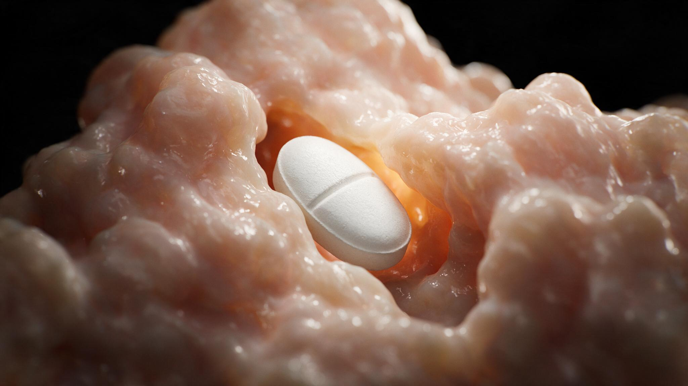
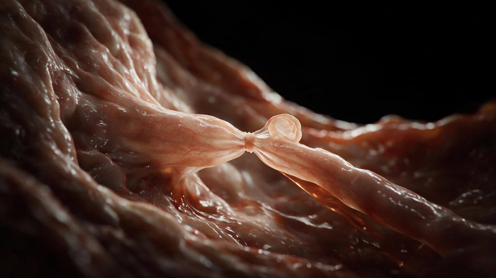
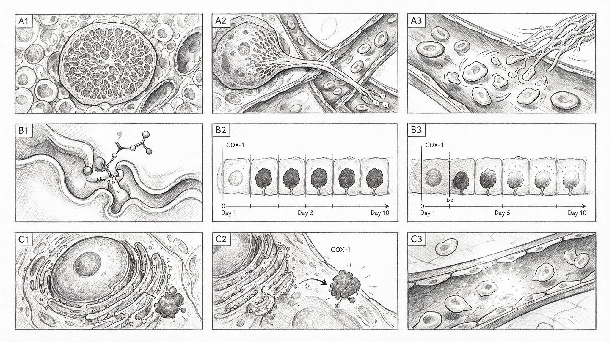
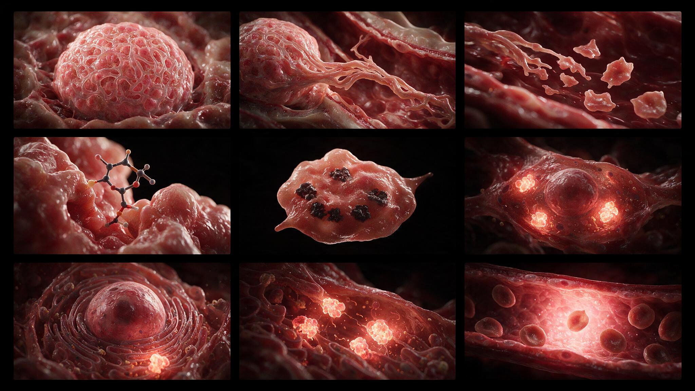

One tablet. One acetyl group. One serine residue deep inside a narrow enzyme channel. That is all it takes to inactivate platelet cyclooxygenase-1 for the lifetime of the platelet — roughly 7 to 10 days. No other drug in the pharmacopoeia has a mechanism this simple and a consequence this durable. Low-dose aspirin prevents myocardial infarction and stroke not because it blocks COX-1 everywhere in the body, but because the platelet, an anucleate cell fragment, cannot synthesize new enzyme. Once its COX-1 is acetylated, it is dead forever.
The endothelial cell tells a different story. It has a nucleus. It has rough endoplasmic reticulum studded with ribosomes. Aspirin acetylates its COX-1 too, but within hours the endothelial cell transcribes new COX-1 mRNA, translates new COX-1 protein, and resumes producing prostacyclin — the vasodilatory, anti-aggregatory prostaglandin that keeps vessels patent and platelets quiet. This asymmetry between the platelet (permanently silenced) and the endothelium (transiently silenced, rapidly replenished) is the pharmacologic basis of low-dose aspirin. This case study maps the molecular journey from tablet to target to the permanent inactivation that makes a single 81 mg dose a lifelong antiplatelet agent.

Platelets are not cells. They are cytoplasmic fragments shed from megakaryocytes in the bone marrow — anucleate discs 2 to 4 microns across, packed with granules and enzymes inherited from their parent cell but incapable of synthesizing new protein. A megakaryocyte extends a long proplatelet arm through the sinusoidal endothelium into the bloodstream. The arm pinches off at constriction points, releasing individual platelets. Each platelet carries a finite endowment of COX-1 enzyme, distributed throughout its dense tubular membrane system. There is no nucleus to transcribe replacement mRNA. There is no rough ER to translate replacement protein. When aspirin acetylates a platelet's COX-1, that enzyme molecule is irreversibly inactivated. The platelet cannot make more. It will circulate for 7 to 10 days with its COX-1 permanently silenced, unable to synthesize thromboxane A2, the prostaglandin that drives platelet aggregation and vasoconstriction. When the platelet is eventually cleared by the spleen, its dead COX-1 goes with it.
The endothelial cell lining the vessel wall also expresses COX-1. Aspirin acetylates it just as efficiently. But the endothelial cell is a complete cell with a large round nucleus, abundant rough endoplasmic reticulum, and an active transcriptional machinery. Within hours of aspirin exposure, the endothelial cell senses the loss of COX-1 activity and upregulates COX-1 gene transcription. New mRNA travels to the rough ER. Ribosomes translate fresh COX-1 protein. The newly synthesized enzyme migrates to the cell membrane and resumes converting arachidonic acid to prostaglandin H2, the precursor to prostacyclin. Prostacyclin diffuses outward, binding to IP receptors on nearby platelets and vascular smooth muscle, signaling them to relax and stay dispersed. The endothelial COX-1 is silenced for hours. The platelet COX-1 is silenced for life. That differential recovery time is the therapeutic window of low-dose aspirin.
Aspirin is unique among NSAIDs. Ibuprofen, naproxen, and indomethacin bind COX-1 reversibly — they occupy the active site, block arachidonic acid access, and then dissociate when the drug concentration falls. Aspirin does something different. It enters the narrow hydrophobic channel leading to the COX-1 active site and transfers its acetyl group to a specific serine residue (Ser530) near the top of the channel. This is a covalent modification. The acetyl group forms a stable ester bond with the serine hydroxyl, physically obstructing the channel so arachidonic acid cannot reach the catalytic tyrosine (Tyr385) deeper inside. The bond is permanent. No amount of washing, dilution, or time will remove it. The enzyme is irreversibly inactivated. The platelet, lacking a nucleus, cannot replace it. Only new platelets, produced by megakaryocytes over the following week, will carry functional COX-1. That is why stopping aspirin does not restore normal platelet function for 7 to 10 days.



Low-dose aspirin (81 mg) is sufficient. Higher doses do not provide greater platelet inhibition — COX-1 acetylation is stoichiometric, and the platelet's finite enzyme pool is saturated at low aspirin concentrations. But higher doses do something low doses do not: they inhibit COX-1 in the systemic circulation before the drug reaches the liver, reducing endothelial prostacyclin production in a way that low-dose aspirin, largely deacetylated by first-pass hepatic metabolism, does not. The 81 mg dose is a pharmacologic scalpel: it reaches the portal circulation, acetylates platelet COX-1 in the presystemic blood, and is then hydrolyzed by hepatic esterases before it can reach the systemic endothelium. The result is maximal platelet inhibition with minimal endothelial suppression. The illustrations in this series follow the aspirin molecule from tablet to enzyme pocket to the permanent silence of platelet COX-1, because understanding why a single covalent bond on a single serine residue can prevent a heart attack is the core logic of antiplatelet pharmacology.
You're set. We'll send the full write-up to your inbox shortly.